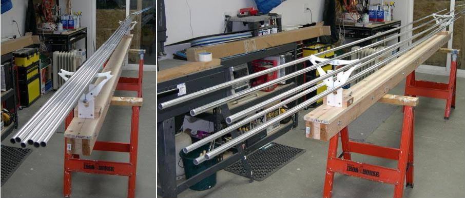

| Stringers (2 of 5) | Menu Previous Page Next Page |
|
 Stringer / Cross Section Attachment - 18 foot stringers ( 3ea. x 6ft. Sections) ready for connection to cross section / stations 1 and 8. All but the 6ft center section tubes have inserts. Stringers are "Snapped" onto the cross section cutouts. |
|